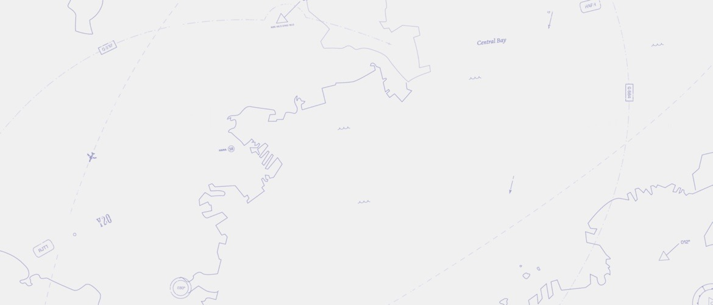
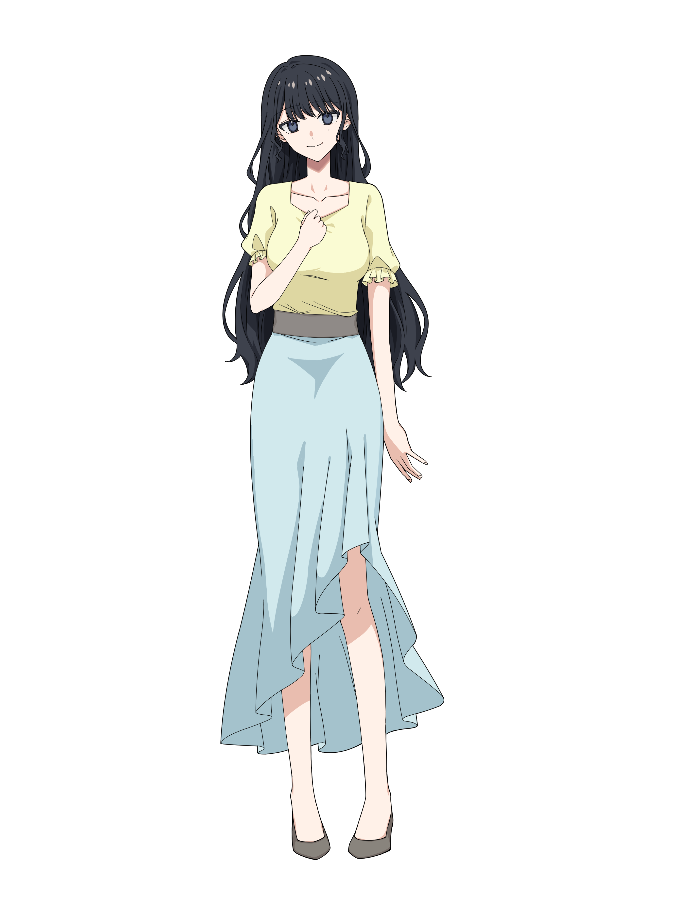

MAYORSノベル
-
Season1-Track.1 かみさまのおうちChecked
-
Season1-Track.2 鈴の音Checked
-
Season1-Track.3 解体Checked
-
Season1-Track.4 このファイルは削除しておこうかChecked
-
Season1-Track.5 いつから好きだったか


この画面は横向き推奨のゲーム画面レイアウトです（縦持ちのままでも操作できます）